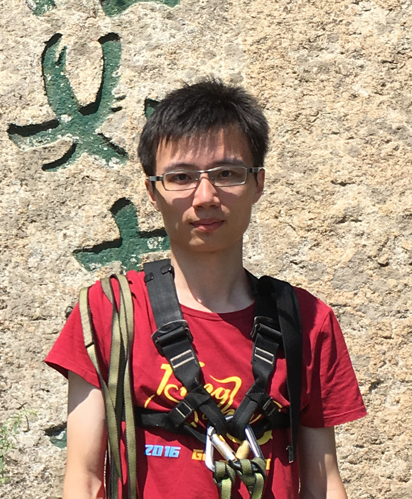

<html>
    <head>
        <title>Xi Cheng</title>
        <style type="text/css">
        .sidebar     { color: #FFFFFF; text-align: Center; font-weight: bold; background-color:#FFFFFF}
        a {
        	text-decoration:none;
        	color:#4576BE;
        	font-weight: 500;
        	font-family: Arial, Helvetica, sans-serif;
        }
        a:hover      { color: #990033}
        body {
        	font-family: Arial, Helvetica, sans-serif;
        	background-color:#FFFFFF;
        	color: #000000;
        }
        h2 {
        	font-family: Arial, Helvetica, sans-serif;
        	font-variant: normal;
        	color: #4F7CC1;
        }
        h1 {
            font-family: Arial, Helvetica, sans-serif;
            font-variant: normal;
            color: #628AC8;
        }
        img {
            max-width: 60%;
            max-height: 60%;
        }
        .title {
            font-family: Arial, Helvetica, sans-serif;
        	font-variant: initial;
            font-weight: bold;
        	color: #4F7CC1;
        }
        div.venue {
            font-family: Arial, Helvetica, sans-serif;
        	font-style: italic;
        }
        .note {
           font-family: Arial, Helvetica, sans-serif;
           font-size: 90%;
        }
        </style>
        <meta http-equiv="Content-Type" content="text/html; charset=UTF-8">
        <meta name="keywords" content="Xi Cheng">
        <meta http-equiv="Content-Type" content="text/html; charset=UTF-8">
    </head>
</html>

<body>
<table width="800" border="0" align="center">
    <tbody>
        <tr>
            <td width="54%">
                <h1>Xi Cheng</h1>
                <p>
                    <br><strong>Member of Technical Staff, Professional</strong><br>
                    <a href="https://www.vmware.com">VMware</a><br>
                </p>
                <p>
                    <b>Email:</b> chengxi09 at gmail dot com 
                </p>
                <p>
                    <b>Address:</b><br>
                    8F South Wing, Raycom Infotech Park Tower C<br>
                    No. 2, Kexueyuan South Road<br>
                    Haidian District<br>
                    Beijing, 100190<br>
                </p>
            </td>
            <td width="40%">
                <div align="center"></div>
            </td>
        </tr>
        <tr>
            <td colspan="2">
                <hr>
                <h3>Research Interest</h3>
                <p>
                    I received my PhD in Tsinghua University on July 2018. Currently I am working at VMware as a Member of Technical Staff. My research focuses on constraint solving, static analysis and program repair. I am working on building a static analysis platform to automatically detect and fix complicated vulnerabilites in real-world software systems. I am interested in how static analysis techniques unleash the software productivity.
                </p>
                <hr>
                <h3>Publications</h3>
                <p>
                    <div class="title">Tolerating C Integer Error via Precision Elevation</div>
                    <div class="author">Xi Cheng, Min Zhou, Xiaoyu Song, Ming Gu and Jiaguang Sun</div>
                    <div class="venue">Accepted by IEEE Transactions on Computers, 2018.</div>
                    <div class="info">[<a href="pub/1-s2.0-S0004370218300237-main.pdf">PDF</a>]</div>
                    <br>
                    <div class="title">Parallelizing SMT Solving via Lazy Decomposition and Conciliation</div>
                    <div class="author">Xi Cheng, Min Zhou, Xiaoyu Song, Ming Gu and Jiaguang Sun</div>
                    <div class="venue">Artificial Intelligence, Elsevier, 2018, 257.</div>
                    <br>
                    <div class="title">IntPTI: Automatic Integer Error Repair With Proper-Type Inference</div>
                    <div class="author">Xi Cheng, Min Zhou, Xiaoyu Song, Ming Gu and Jiaguang Sun</div>
                    <div class="venue">In Proceedings of the 32th IEEE/ACM International Conference on Automated Software Engineering, ASE'17, Urbana-Champaign, IL, USA, 2017.</div>
                    <div class="info">[<a href="pub/xi_ase17.pdf">PDF</a>]</div>
                    <br>
                    <div class="title">RABIEF: Range Analysis Based Integer Error Fixing</div>
                    <div class="author">Xi Cheng</div>
                    <div class="venue">In Proceedings of 24th ACM SIGSOFT International Symposium on the Foundations of Software Engineering, FSE'16, Seattle, WA, USA, 2016.</div>
                    <div class="info">[<a href="pub/xi_fse16.pdf">PDF</a>]</div>
                    <br>
                    <div class="title">Improving Failure Detection by Automatically Generating Test Cases Near the Boundaries</div>
                    <div class="author">Min Zhou, Xi Cheng, Xinrui Guo, Ming Gu, Hongyu Zhang and Xiaoyu Song</div>
                    <div class="venue">In Proceedings of 40th IEEE Computer Society International Conference on Computers, Software and Applications, COMPSAC'16, Atlanta, GA, USA, 2016.</div>
                    <div class="info">[<a href="pub/min_compsac16.pdf">PDF</a>]</div>
                    <br>
                    <div class="title">Automatic Fix for C Integer Errors by Precision Improvement</div>
                    <div class="author">Xi Cheng, Min Zhou, Xiaoyu Song, Ming Gu and Jiaguang Sun</div>
                    <div class="venue">In Proceedings of 40th IEEE Computer Society International Conference on Computers, Software and Applications, COMPSAC'16, Atlanta, GA, USA, 2016. </div>
                    <div><b>Best Paper Award</b></div>
                    <div class="info">[<a href="pub/xi_compsac16.pdf">PDF</a>]</div>
                </p>
                <hr>
                <h3>Research Projects</h3>
                <div class="note">Follow me on Github: <a href="https://github.com/cxcfan">@cxcfan</a>, <a href="https://github.com/45258E9F">@45258E9F</a></div>
                <p>
                    <a href="https://github.com/cxcfan/PZ3"><span class="title">PZ3</span></a>
                    <br>
                    A parallel SMT solver based on lazy decomposition and conciliation schema.
                    <br><br>
                    <a href="https://github.com/45258E9F/CIntFix"><span class="title">CIntFix</span></a>
                    <br>
                    A tool for automatic C integer error fixing based on precision improvement.
                    <br><br>
                    <a href="https://github.com/45258E9F/IntPTI"><span class="title">IntPTI</span></a>
                    <br>
                    A static-analysis based C integer error fixing tool based on proper-type inference.
                </p>
                <hr>
            </td>
        </tr>
    </tbody>
</table>
</body>